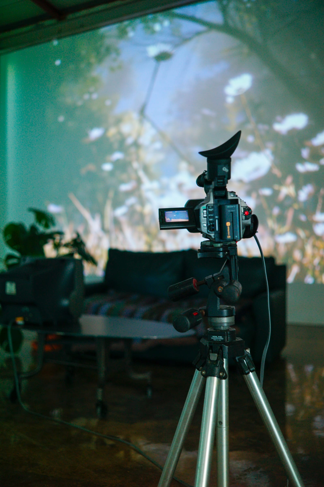
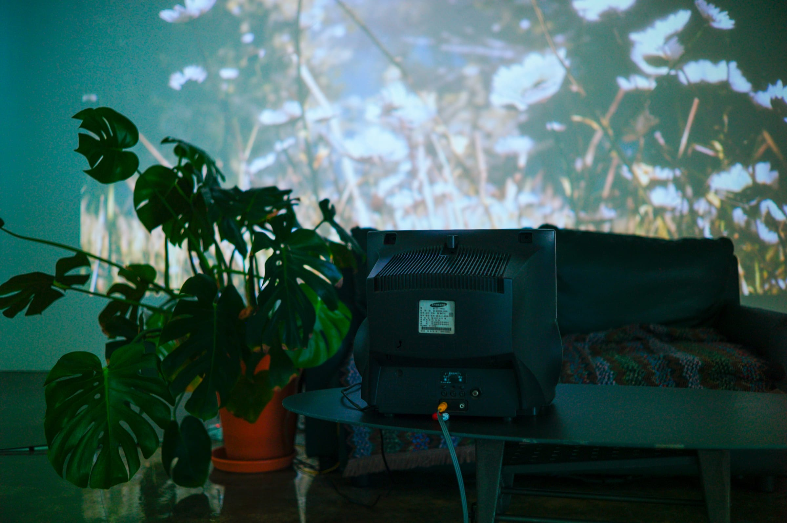
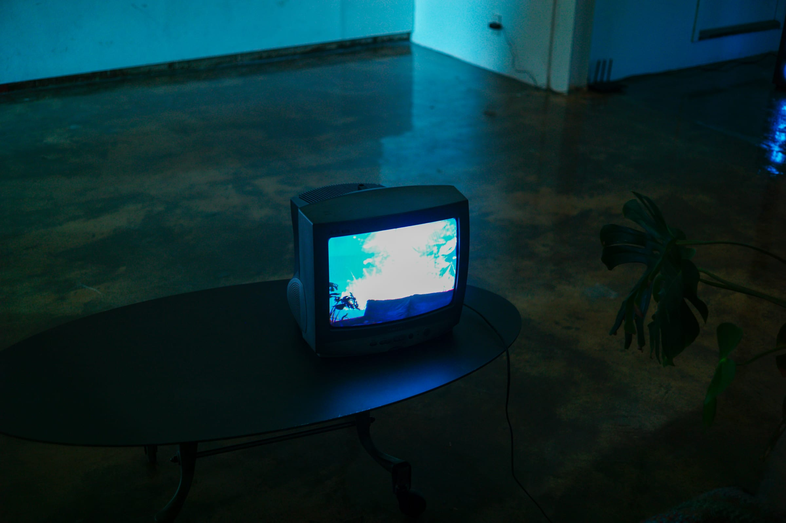
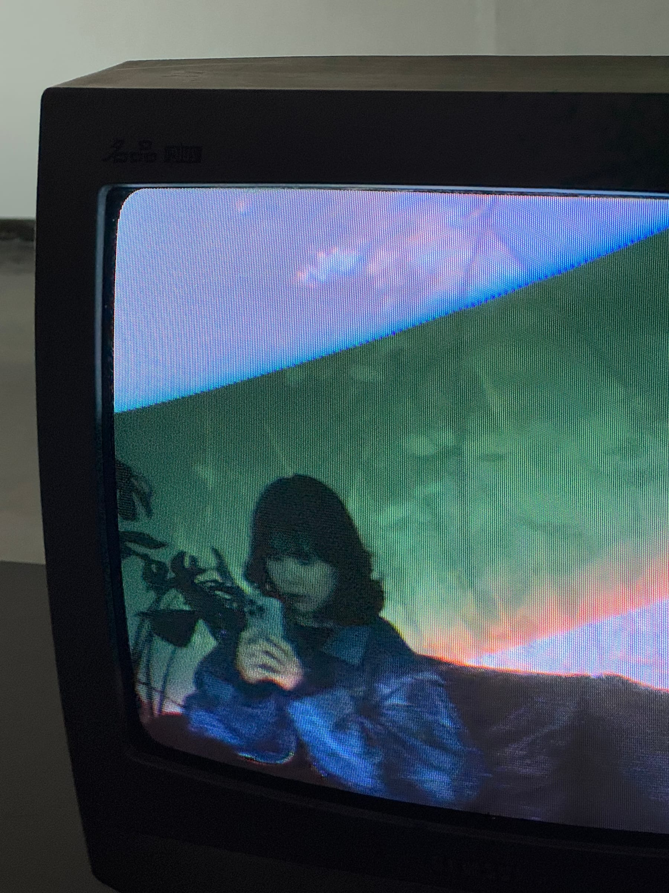

본문으로 이동
3Dowon
Menu
3Dowon
EN
3Dowon
About
Works
All
Interactive
Installation
Video
Exhibition
Performance
VR/AR
Web
Lab
Portfolio
CV
EN




POSTCODE
날짜
2025
유형
전시, 인터랙티브
제작
개인
이런 작업도 좋아하실 거예요
3Dowon's Workdesk
/ Exhibition, Interactive / 2025
Hyundai The new IONIQ6
Hyundai The new IONIQ6
/ Exhibition, Interactive / 2025
Lucky Flip
Lucky Flip
/ Exhibition, Interactive / 2025
Arte Kids park
/ Exhibition, Interactive / 2023
작업 보기 ↗
닫기 ×